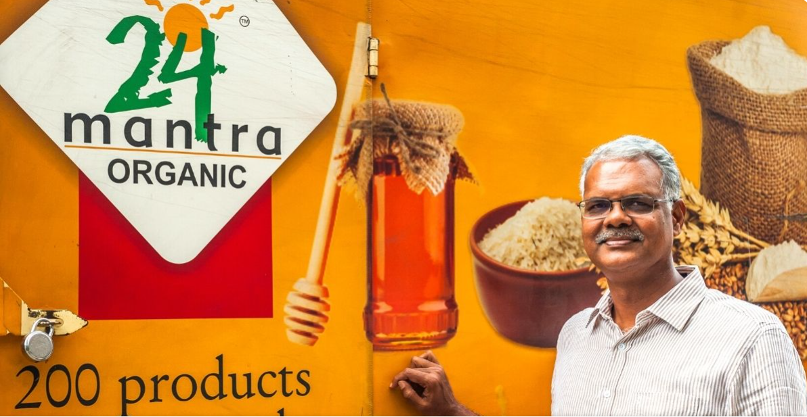
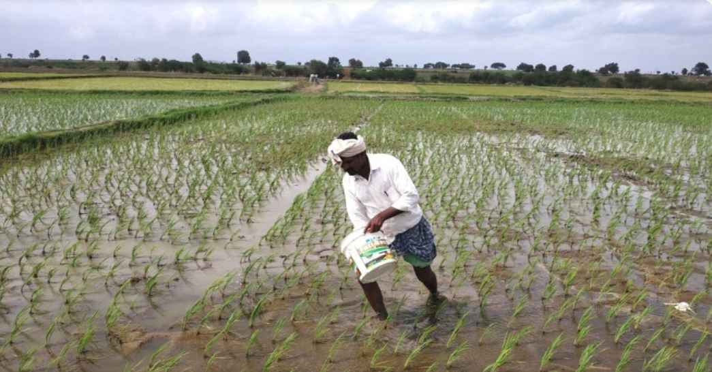

Hyderabad Man Helps 45000 Farmers Turn To Organic Farming, Increase Income By 30%
Raj Seelam from Hyderabad founded Sresta Natural Bioproducts to encourage farmers to grow organic food, which he sells under the brand 24 Mantra to help customers lead more sustainable lives

In 1988, Raj Seelam, an agriculture graduate from Hyderabad, joined a chemical fertiliser and pesticide manufacturing company. Over the next 12 years, he worked closely with farmers, guiding them with seed purchase and the use of chemicals.
But in the process, Raj realised the harmful impact of these chemicals on agricultural land, as well as the ecosystem at large. “These insecticides and pesticides were designed to kill. They terminated microbes and other living organisms that were vital to maintaining the health of the soil,” the 56-year-old says.
Raj also found that the need for these chemicals had increased over the years. “Massive amounts of chemicals were being sprayed on vegetables such as cauliflower, cabbage, capsicum, potato and others. It was like bathing these vegetables with poison. A few farmers used 2-3 rounds of chemical fertilisers for a short 60-day crop,” he tells The Better India.
The heavy use of chemicals led to a drop in soil fertility and affected crop production. Raj also became witness to the farmers falling into debt traps and subsequently dying by suicide. “As they failed to earn enough money, the burden of debts increased. By the mid-1990s, I started realising the importance of sustainable farming techniques,” he adds.
Triggered by a personal loss

Raj’s final trigger came in 1999, when his father was diagnosed with cancer, and passed away the following year. “I am sure that it was the pesticide infused food and environment pollution that caused the illness,” he says.
Pained by his loss, Raj quit his job to start a sustainable livelihood venture. He launched Sresta Natural Bioproducts in 2004 and, to date, has helped over 45,000 farmers turn to practicing organic farming. They sell their produce to the company, which markets it under the brand 24 Mantra. Farmers say this helps them earn 30% more than the market price.
Raj says he decided to create an ecosystem to provide uncontaminated food to customers and reduce the negative impact of chemicals on the environment. “I researched for a couple of years and decided to source organic produce from farmers and sell it in the market. I began working with farmers in Nahargarh in Rajasthan and Murtizapur in Akola district of Maharashtra. Around 10-20 of them were trained in growing organic food in each state, with the help of local NGOs and agriculture experts,” he explains.
A few years later, Raj tried to sell the products in the retail market, but they did not receive acceptance. “This was in 2005, when the concept of organic food was not so popular, and the market was not ready. No one was ready to buy the products, and retailers complained that they occupied unnecessary space. The company outlets in Hyderabad, Bengaluru, Pune and Chennai began suffering losses. The only way to overcome this was by educating potential buyers. We decided to sell the products through farmer groups and create awareness simultaneously,” Raj says.
.png)